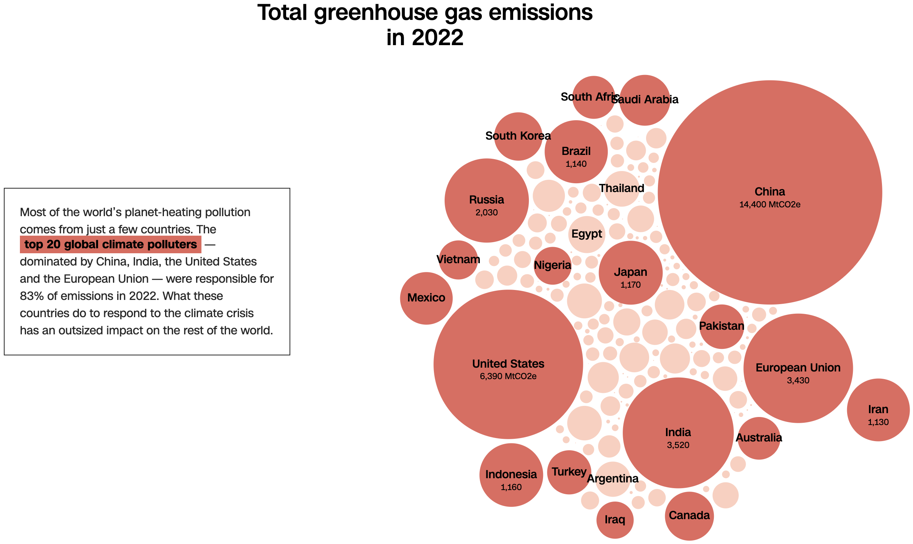
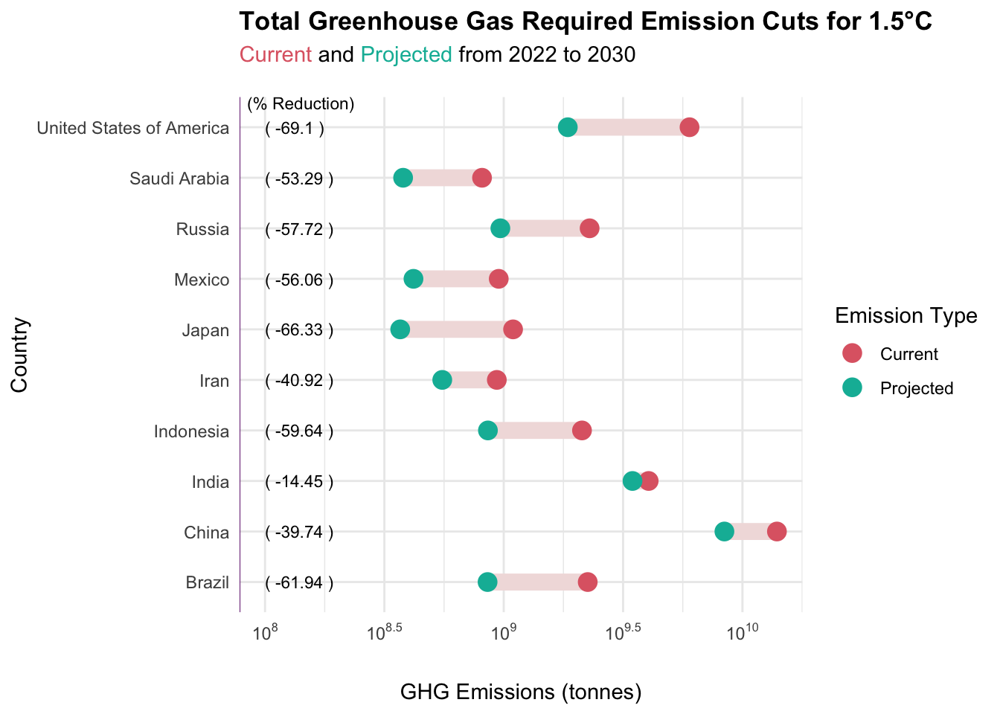

library(ggplot2)
library(ggrepel)
library(ggtext)
library(htmltools)
library(rnaturalearth)
library(sf)
library(tidyverse)
library(scales)
library(mapview)
library(rmapshaper)CSC3107_Assignment_Seashell
1. Introduction
a. Background
The chosen visualization to critique is on the world’s contribution to climate impact. The target news article is here.
The news article aims to convey the impacts if the current situation remains unchanged and the amount effort needed to be put in by specific countries to help cut climate pollution.
b. Appreciated Aspects
- The use of a dynamic bubble chart to emphasise on rankings to visualise on the leading countries’ emission contributions in 2022
- The timeline graph shown in the visualization makes use of future predictions by 2030 to show the CO2 estimated emissions by country. The height of the charts albeit difficult to see due to the CSS, is to scale for their specific unit.
- The visualization uses different hues of the same red colour to describe the intensity of the data.
c. Problematic Aspects
i. Bubble Chart
- The chart does not provide a legend for the measurement metrics used. It is unclear what the size of the bubble represents.
- The chart does not provide a clear ranking of the top 20 countries’ emission contributions. It is hard to differentiate the mid-range sizes.
ii. Horizontal Bar Chart
- It did not specify the type of emission that is required for reduction. Stating as total or per capita emission will convey different meaning of what action that country should take to reduce them. For instance, per capita will be revamping individuals lifestyle such as the current change of adopting EVs. Total will be introducing industry standard policies that affects industrial sectors like transportation.
- Horizontal bar chart shows misleading information that Nigeria should contribute more to the greenhouse gases emission. The red colour for both sides also contributes to the misled of information.
d. Points for Improvement
- More numerical figures and labels could be used with the bubble chart and graphs to convey the content more effectively at a glance.
- A historical chart of the top countries contribution to climate impact can be shown thus identifying the actions taken by them to reduce global emissions.
- Provide a legend for the bubble chart to show the size of the bubble represents the amount of emissions.
- (Feedback)
- Use world map to represent the data
- Highlight top 10 (label countries)
- Show 2 world maps to show current emission, and the other to show countries who should reduce emission in GHG
e. Publicly Available Data
i. Climate Watch Data
- Limited data till 2020 (able to filter by sectors contribution, gases, countries, etc): Climate Watch Data
ii. Climate Action Tracker
- Able to filter by sector and various indicators, this video explains on the different tool provided. Limited data of Southeast Asia countries, can look into changing focus to worldwide contributors: Climate Action Tracker
- GHG Emission Analysis
iii. Our World in Data
iv. EPA
- Interactive and various form to visualize data and charts: EPA
v. The World Bank
2. Data Collection and Preprocessing
a. Import packages
b. View Data
i. Reading of Greenhouse Gas Emissions Per Capita Dataset
# A tibble: 35,611 × 4
Entity Code Year Per.capita.greenhouse.gas.emissions.in.CO..equivale…¹
<chr> <chr> <int> <dbl>
1 Afghanistan AFG 1850 1.96
2 Afghanistan AFG 1851 1.96
3 Afghanistan AFG 1852 1.97
4 Afghanistan AFG 1853 1.98
5 Afghanistan AFG 1854 1.99
6 Afghanistan AFG 1855 1.99
7 Afghanistan AFG 1856 2.00
8 Afghanistan AFG 1857 2.00
9 Afghanistan AFG 1858 2.01
10 Afghanistan AFG 1859 2.01
# ℹ 35,601 more rows
# ℹ abbreviated name: ¹Per.capita.greenhouse.gas.emissions.in.CO..equivalentsii. Reading of Total Greenhouse Gas Emission Analysis Dataset
# A tibble: 8,424 × 10
region scenario sector indicator year value unit version comments source
<chr> <chr> <chr> <chr> <int> <dbl> <chr> <chr> <chr> <chr>
1 VNM Historical Econo… Emission… 1990 97.5 MtCO… 2023-1… Histori… Lates…
2 USA Historical Econo… Emission… 1990 6454. MtCO… 2023-1… Histori… Lates…
3 USA Historical LULUCF Emission… 1990 -886. MtCO… 2023-1… Histori… Lates…
4 UKR Historical Econo… Emission… 1990 943. MtCO… 2021-1… Histori… Lates…
5 UKR Historical LULUCF Emission… 1990 -58.4 MtCO… 2021-1… Histori… Lates…
6 GBR Historical Econo… Emission… 1990 792. MtCO… 2023-0… Histori… Lates…
7 GBR Historical LULUCF Emission… 1990 11.0 MtCO… 2023-0… Histori… Lates…
8 ARE Historical Econo… Emission… 1990 61.7 MtCO… 2023-1… Histori… Lates…
9 ARE Historical LULUCF Emission… 1990 0 MtCO… 2023-1… Histori… Lates…
10 TUR Historical Econo… Emission… 1990 220. MtCO… 2023-0… Histori… Lates…
# ℹ 8,414 more rowsiii. Reading of Population From 1960 - 2022 Dataset
# A tibble: 266 × 69
Country.Name Country.Code Indicator.Name Indicator.Code X1960 X1961 X1962
<chr> <chr> <chr> <chr> <dbl> <dbl> <dbl>
1 Aruba ABW Population, t… SP.POP.TOTL 5.46e4 5.58e4 5.67e4
2 Africa Easte… AFE Population, t… SP.POP.TOTL 1.31e8 1.34e8 1.38e8
3 Afghanistan AFG Population, t… SP.POP.TOTL 8.62e6 8.79e6 8.97e6
4 Africa Weste… AFW Population, t… SP.POP.TOTL 9.73e7 9.93e7 1.01e8
5 Angola AGO Population, t… SP.POP.TOTL 5.36e6 5.44e6 5.52e6
6 Albania ALB Population, t… SP.POP.TOTL 1.61e6 1.66e6 1.71e6
7 Andorra AND Population, t… SP.POP.TOTL 9.44e3 1.02e4 1.10e4
8 Arab World ARB Population, t… SP.POP.TOTL 9.34e7 9.58e7 9.83e7
9 United Arab … ARE Population, t… SP.POP.TOTL 1.33e5 1.41e5 1.49e5
10 Argentina ARG Population, t… SP.POP.TOTL 2.03e7 2.07e7 2.10e7
# ℹ 256 more rows
# ℹ 62 more variables: X1963 <dbl>, X1964 <dbl>, X1965 <dbl>, X1966 <dbl>,
# X1967 <dbl>, X1968 <dbl>, X1969 <dbl>, X1970 <dbl>, X1971 <dbl>,
# X1972 <dbl>, X1973 <dbl>, X1974 <dbl>, X1975 <dbl>, X1976 <dbl>,
# X1977 <dbl>, X1978 <dbl>, X1979 <dbl>, X1980 <dbl>, X1981 <dbl>,
# X1982 <dbl>, X1983 <dbl>, X1984 <dbl>, X1985 <dbl>, X1986 <dbl>,
# X1987 <dbl>, X1988 <dbl>, X1989 <dbl>, X1990 <dbl>, X1991 <dbl>, …c. Clean
i. Remove NAs and renamed column from Greenhouse Gas Emissions Per Capita Dataset
# A tibble: 35,611 × 4
country code year per_capita_ghg_emissions_t
<chr> <chr> <int> <dbl>
1 Afghanistan AFG 1850 1.96
2 Afghanistan AFG 1851 1.96
3 Afghanistan AFG 1852 1.97
4 Afghanistan AFG 1853 1.98
5 Afghanistan AFG 1854 1.99
6 Afghanistan AFG 1855 1.99
7 Afghanistan AFG 1856 2.00
8 Afghanistan AFG 1857 2.00
9 Afghanistan AFG 1858 2.01
10 Afghanistan AFG 1859 2.01
# ℹ 35,601 more rowsii. Rename column from Total Population Dataset
# A tibble: 266 × 69
country code Indicator.Name Indicator.Code X1960 X1961 X1962 X1963
<chr> <chr> <chr> <chr> <dbl> <dbl> <dbl> <dbl>
1 Aruba ABW Population, t… SP.POP.TOTL 5.46e4 5.58e4 5.67e4 5.75e4
2 Africa Easte… AFE Population, t… SP.POP.TOTL 1.31e8 1.34e8 1.38e8 1.42e8
3 Afghanistan AFG Population, t… SP.POP.TOTL 8.62e6 8.79e6 8.97e6 9.16e6
4 Africa Weste… AFW Population, t… SP.POP.TOTL 9.73e7 9.93e7 1.01e8 1.04e8
5 Angola AGO Population, t… SP.POP.TOTL 5.36e6 5.44e6 5.52e6 5.60e6
6 Albania ALB Population, t… SP.POP.TOTL 1.61e6 1.66e6 1.71e6 1.76e6
7 Andorra AND Population, t… SP.POP.TOTL 9.44e3 1.02e4 1.10e4 1.18e4
8 Arab World ARB Population, t… SP.POP.TOTL 9.34e7 9.58e7 9.83e7 1.01e8
9 United Arab … ARE Population, t… SP.POP.TOTL 1.33e5 1.41e5 1.49e5 1.57e5
10 Argentina ARG Population, t… SP.POP.TOTL 2.03e7 2.07e7 2.10e7 2.14e7
# ℹ 256 more rows
# ℹ 61 more variables: X1964 <dbl>, X1965 <dbl>, X1966 <dbl>, X1967 <dbl>,
# X1968 <dbl>, X1969 <dbl>, X1970 <dbl>, X1971 <dbl>, X1972 <dbl>,
# X1973 <dbl>, X1974 <dbl>, X1975 <dbl>, X1976 <dbl>, X1977 <dbl>,
# X1978 <dbl>, X1979 <dbl>, X1980 <dbl>, X1981 <dbl>, X1982 <dbl>,
# X1983 <dbl>, X1984 <dbl>, X1985 <dbl>, X1986 <dbl>, X1987 <dbl>,
# X1988 <dbl>, X1989 <dbl>, X1990 <dbl>, X1991 <dbl>, X1992 <dbl>, …d. Process
i. Filter emissions happening in 2022 from Greenhouse Gas Emissions Per Capita Dataset
# A tibble: 208 × 4
country code year per_capita_ghg_emissions_t
<chr> <chr> <int> <dbl>
1 Afghanistan "AFG" 2022 0.890
2 Africa "" 2022 3.33
3 Albania "ALB" 2022 2.83
4 Algeria "DZA" 2022 6.28
5 Andorra "AND" 2022 6.04
6 Angola "AGO" 2022 5.12
7 Antigua and Barbuda "ATG" 2022 7.28
8 Argentina "ARG" 2022 8.53
9 Armenia "ARM" 2022 3.47
10 Asia "" 2022 6.37
# ℹ 198 more rowsii. Filter projected reduction emission by 2030 to keep global temperature rise below 1.5°C from Greenhouse Gas Emission Analysis Dataset
# A tibble: 41 × 2
region projected_ghg_emissions_t
<chr> <dbl>
1 BTN 3100000
2 CHE -32360000
3 GMB 7670000
4 CRI 14910000
5 NOR -12990000
6 SGP 8270000
7 NZL 31670000
8 CHL 64020000
9 PER 102690000
10 MAR 115210000
# ℹ 31 more rowsiii. Filter population data for 2022 from Total Population Dataset
# A tibble: 266 × 2
code population
<chr> <dbl>
1 ABW 106445
2 AFE 720859132
3 AFG 41128771
4 AFW 490330870
5 AGO 35588987
6 ALB 2777689
7 AND 79824
8 ARB 464684914
9 ARE 9441129
10 ARG 46234830
# ℹ 256 more rowsiv. Merge Per Capita GHG 2022 and Population 2022 datasets based on the country code
# A tibble: 208 × 4
country code per_capita_ghg_emissions_t population
<chr> <chr> <dbl> <dbl>
1 Afghanistan "AFG" 0.890 41128771
2 Africa "" 3.33 NA
3 Albania "ALB" 2.83 2777689
4 Algeria "DZA" 6.28 44903225
5 Andorra "AND" 6.04 79824
6 Angola "AGO" 5.12 35588987
7 Antigua and Barbuda "ATG" 7.28 93763
8 Argentina "ARG" 8.53 46234830
9 Armenia "ARM" 3.47 2780469
10 Asia "" 6.37 NA
# ℹ 198 more rowsv. Merge the GHG 2022 and Projected GHG 2030 datasets based on the country code
# A tibble: 208 × 5
country code per_capita_ghg_emiss…¹ population pc_projected_ghg_emi…²
<chr> <chr> <dbl> <dbl> <dbl>
1 Afghanistan "AFG" 0.890 41128771 NA
2 Africa "" 3.33 NA NA
3 Albania "ALB" 2.83 2777689 NA
4 Algeria "DZA" 6.28 44903225 NA
5 Andorra "AND" 6.04 79824 NA
6 Angola "AGO" 5.12 35588987 NA
7 Antigua and B… "ATG" 7.28 93763 NA
8 Argentina "ARG" 8.53 46234830 4.14
9 Armenia "ARM" 3.47 2780469 NA
10 Asia "" 6.37 NA NA
# ℹ 198 more rows
# ℹ abbreviated names: ¹per_capita_ghg_emissions_t,
# ²pc_projected_ghg_emissions_t3. Visualization
a. World Emission Chart using World Map
Previous Chart
- Bubble chart by size to show the ranking of the countries 
Improved Elements
- Used world map to show the data
- Used label to show the ranking of the countries
- Used color palette to show the intensity of the data
Note: European Union is not a country, it is a political and economic union of 27 member states that are located primarily in Europe. The data has been broken up to show as individual state.
[1] "Reducing features on `world` for faster rendering from 99613"[1] 6296Warning: Removed 2 rows containing missing values or values outside the scale range
(`geom_label_repel()`).Warning: Removed 6 rows containing missing values or values outside the scale range
(`geom_point()`).